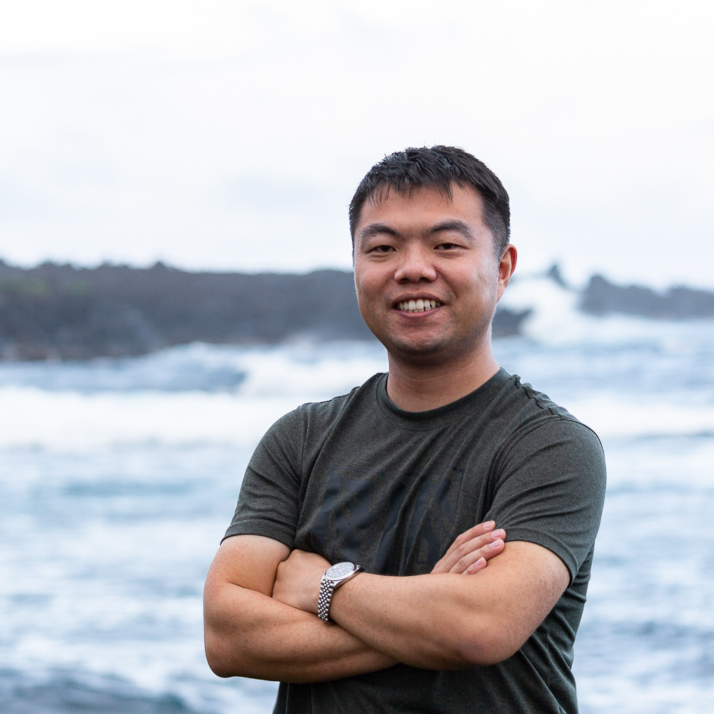

Chong Liu (刘冲) @ UC Santa Barbara
|  |
Welcome to my homepage! I'm Chong Liu, a Ph.D. candidate in computer science advised by Prof. Yu-Xiang Wang at University of California, Santa Barbara. |
Research Interests
- Machine Learning, including global optimization, active learning, bandits, and sequential decision making.
- AI for Science, including atomistic modeling and experimental design.
News
- Mar. 2023: Happy to speak in TrustML Young Scientist Seminars at RIKEN Center for Advanced Intelligence Project!
- Mar. 2023: Happy to speak at University of Nevada, Reno!
- Mar. 2023: Happy to speak at University of North Carolina at Charlotte!
- Mar. 2023: Happy to speak in Grad Research Show and Tell hosted by UCSB Women in Computer Science!
- Mar. 2023: Happy to speak at University of British Columbia!
- Feb. 2023: Technical report "No-Regret Linear Bandits beyond Realizability" is released!
- Feb. 2023: Happy to speak at University College London!
- Jan. 2023: Happy new year! Our WACV-2023 paper is reported by Amazon Science Blog!
- Dec. 2022: Happy to be invited to review for KDD-2023!
- Nov. 2022: Technical report "Global Optimization with Parametric Function Approximation" is released!
- Nov. 2022: I'm attending NeurIPS-2022 and will be speaking at NeurIPS-2022 High School Outreach. Happy to talk to you in person in New Orleans, LA!
- Oct. 2022: Paper "Human-in-the-Loop Video Semantic Segmentation Auto-Annotation" is accepted by the 10th IEEE/CVF Winter Conference on Applications of Computer Vision (WACV-2023)! In this paper, we apply active learning to build an auto-annotation framework for video semantic segmentation. Congratulations to my collaborators at Amazon!
- Sep. 2022: Happy to be invited to review for AAAI-2023 and AISTATS-2023!
- Jul. 2022: I'm attending ICML-2022. Happy to talk to you in person in Baltimore, MD!
- Jun. 2022: Two papers on global optimization and experimental design are accepted by the ICML Workshop on Adaptive Experimental Design and Active Learning in the Real World (ReALML-2022)!
- Apr. 2022: Happy to speak in Computer Science Theory Seminar at Rensselaer Polytechnic Institute!
Contact
Chong Liu2118 Henley Hall
University of California, Santa Barbara
Santa Barbara, CA 93106